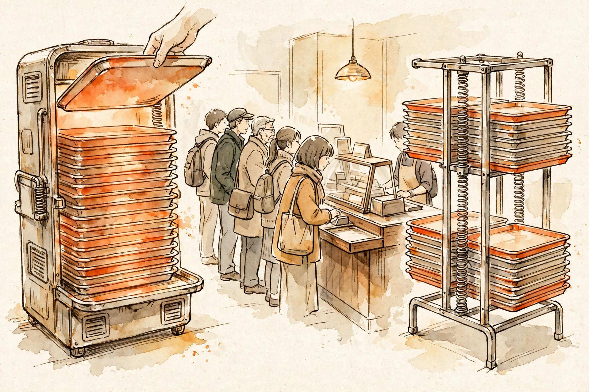

Stacks and queues are a discipline, not a data structure. A Python
list is a stack — but it is not a queue.
This guide is about why: the cafeteria-tray intuition, the doubling argument that makes
lists stack-worthy, the Θ(n²) trap hiding inside pop(0), the block structure
that gives collections.deque O(1) on both ends, and valid parentheses as
the canonical stack problem.

L1 recap (the idea we reuse): a Python list is a contiguous block that
doubles on overflow. Touching the end — append,
pop() — never shifts anything, and n appends cost ~2n total word writes, so
each is amortized O(1). Touching the front shifts every element.
L3 recap (the idea we reuse): pointer surgery gives O(1) insert and
delete at the head of a linked structure. Getting O(1) at both ends demands a
two-ended structure — and that is exactly what collections.deque is under
the hood: a doubly-linked list of blocks.
So the whole lesson is a corollary of L1 + L3: a list's end is cheap, a list's front is expensive, and the fix is a structure with two ends. The stack and queue names describe how you're allowed to touch the structure, not which structure it is.
List as stack. append and pop() touch only
the end of the list — no shifting, ever. L1's doubling argument says n appends cost ~2n
word writes total, i.e. amortized O(1) per op. The top of the stack is
s[-1]. Your stack is free; it's been in your pocket since L1.
Why a list fails as a queue. pop(0) removes the front —
and every remaining element must slide one slot left, a memmove of n−1
machine words. One dequeue costs Θ(n); n dequeues cost Θ(n²). Same
story for insert(0, x). This is the #1 Python interview trap: the code
looks like a queue and runs like a quadratic.
How deque gets O(1) on both ends. CPython's collections.deque
is a doubly-linked list of blocks, each block holding up to 64 slots
(pointers). append/appendleft fill the tail/head block or allocate
a fresh one; pop/popleft do the reverse. All O(1), no shifting
ever.
Tradeoff (worth knowing for interviews): per-block allocation overhead — a
deque of 3 elements can occupy a full 64-slot block. And d[i] indexing is
O(1) but slower than a list's, because it walks block links instead of doing
pointer arithmetic. Reach for deque for queues, not for random access.
Stack: amortized O(1), derived. From L1's doubling: appends 1…n trigger
resizes at sizes 1, 2, 4, 8, …, each copying its current contents. Total copy work =
1 + 2 + 4 + … + n ≈ 2n. Divide by n appends → O(1) each, amortized.
pop() just decrements the length — strictly O(1).
Queue-as-list: Θ(n²), derived. Dequeue k from a list of n shifts (n−k) words. Total over n dequeues:
Spaced retrieval: this is exactly L7's lesson — Big-O as a growth-rate
lens. Θ(n²) vs Θ(n) is the language L7 taught you, and here it measures the single most
consequential choice in this lesson: pop(0) vs popleft().
"Given a string containing just the characters ()[]{} determine if the input string is valid." Why it's canonical: nesting is a stack — each closer must match the most recent unmatched opener, which is precisely LIFO.
# LeetCode 20 — Valid Parentheses
def isValid(s: str) -> bool:
pairs = {')': '(', ']': '[', '}': '{'} # closer -> expected opener
stack: list[str] = []
for ch in s:
if ch in pairs: # a closing bracket
if not stack or stack.pop() != pairs[ch]:
return False # mismatch, or nothing to match
else:
stack.append(ch) # opener goes on the stack
return not stack # valid only if nothing is left over
Complexity: each character is pushed at most once and popped at most
once → 2n stack ops → O(n) time. Worst case the stack holds all n
openers (input "((((…") → O(n) space.
Walkthrough on "([])": push (, push
[, see ] → pop [ ✓, see ) → pop
( ✓, stack empty → True. On "([)]": push (, push
[, see ) → pop [ ✗ mismatch → False (Figure 1).
Stack — the tell-tale words: "most recent", "last unmatched", "nested", "reverse the order of processing", undo, back-button, call-return. The sentence shape: "X must be resolved before the Y that was waiting before it" → stack.
Queue — "fair order", "first come first served", "level by level", "process in arrival order", task scheduling, BFS frontiers. The sentence shape: "Handle in the order they arrive" → queue.
Deque — "need both ends": add to the front, remove from the back. Sliding-window maximum (next month's L20) is the famous one — it will need exactly this lesson's machinery.
list.pop(0) / list.insert(0, x) in a loop. Hidden O(n) per op → O(n²) total (Section 3's derivation). The #1 Python interview trap; use deque.popleft()."](" crashes on stack.pop() if you don't guard if not stack. The guard is part of the algorithm, not a nicety."(((" never errors — every pop is fine — but it's invalid. return not stack catches the unmatched openers.RecursionError. An explicit stack is the fix (previews L8 Recursion).queue.Queue is for threads, not interviews. It's lock-guarded and slower. In coding rounds, collections.deque is the queue.LeetCode 232, worth naming even if we don't fully solve it here: two stacks —
push onto in, pop/peek from out, and transfer everything from
in to out only when out is empty. Each element
moves at most twice (in → out → out), so the amortized cost per operation is O(1).
If an interviewer asks "why two stacks?", the answer is the lazy transfer: moving
element-by-element on every pop would be Θ(n²); batching the reversal amortizes it.
L20 · Monotonic stacks & deque patterns — this lesson's machinery weaponized: next-greater-element and sliding-window maximum via deque.
L32 · BFS/DFS — the queue is the BFS frontier; the stack is iterative DFS. Today's discipline becomes tomorrow's traversal.
L8 · Recursion — the call stack is literally a stack; today's LIFO discipline explains the call-stack mechanism.
L23 · Design: LRU cache — doubly-linked list + hash map: the deque idea (O(1) at both ends) upgraded into a design problem.
Cover the answers. Say each one aloud until it's clean.
Append/pop at the end never shift — amortized O(1) by the doubling argument (L1). But pop(0) shifts every remaining element: Θ(n) per op, Θ(n²) for n dequeues.
Dequeue k costs (n−k) word moves, so total = Σk=0n−1(n−k) = n(n+1)/2 = Θ(n²). Compare with deque.popleft(): n constant-time ops = Θ(n).
It's a doubly-linked list of 64-slot blocks; only the head and tail blocks are ever touched, so nothing shifts. Tradeoff: per-block allocation overhead, and d[i] indexing costs a block hop instead of plain address arithmetic.
Push (, push [, then ) pops [ — but pairs[')'] expects (. Mismatch → False. The stack enforces that the most recent unmatched opener matches each closer.
"(((" never triggers a mismatch — there's simply no closer to fail on. The leftover openers must be checked at the end.
It's a synchronized, lock-guarded queue built for threads — slower and noisier than needed. Use collections.deque: plain O(1) ops on both ends.
Lazy transfer: push to in, pop/peek from out, and only move everything from in to out when out is empty. Each element moves at most twice, amortizing to O(1) (LeetCode 232).
n dequeues cost Θ(n²) with pop(0) versus Θ(n) with popleft() — the "simple" version turns BFS into a quadratic algorithm.
"Stacks and queues are discipline, not data structure. A Python list gives you a stack for free — append and pop off the end are amortized O(1). It does not give you a queue: pop(0) shifts everything left, so n dequeues cost Θ(n²). That's why collections.deque exists — a linked list of 64-slot blocks, O(1) on both ends. The interview tells: nested or last-unmatched → stack; arrival order or level-by-level → queue. The classic demo is valid parentheses: push openers, pop on closers, every character handled at most once, so O(n) time and O(n) space."